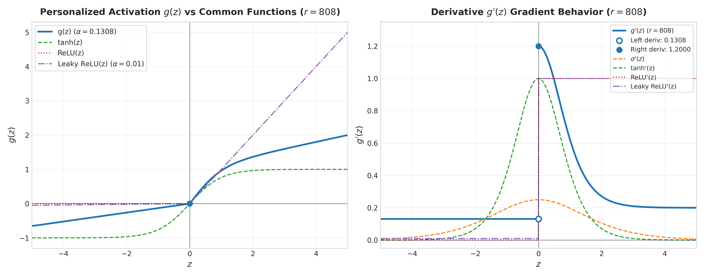
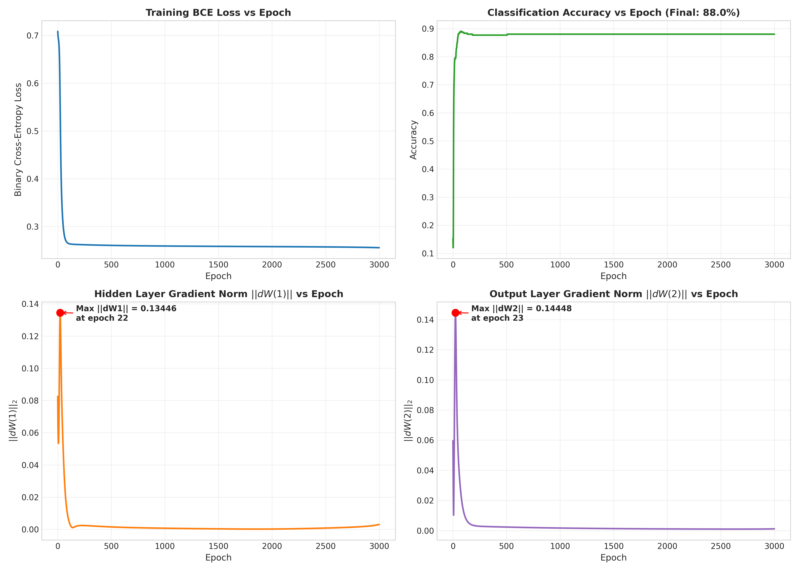
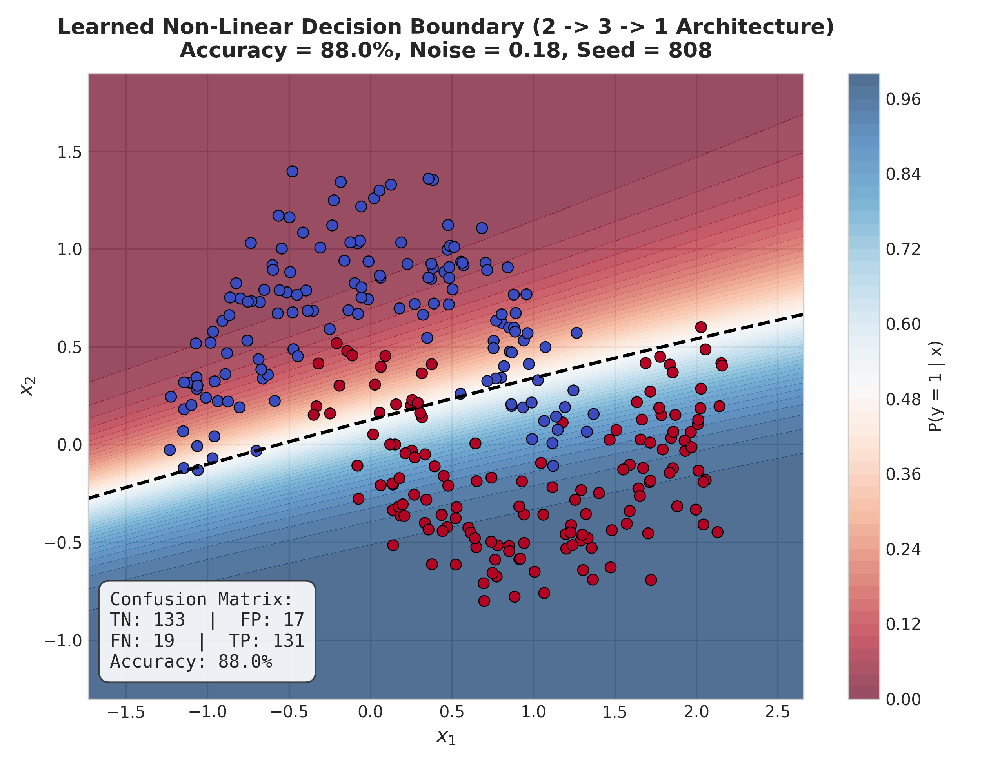
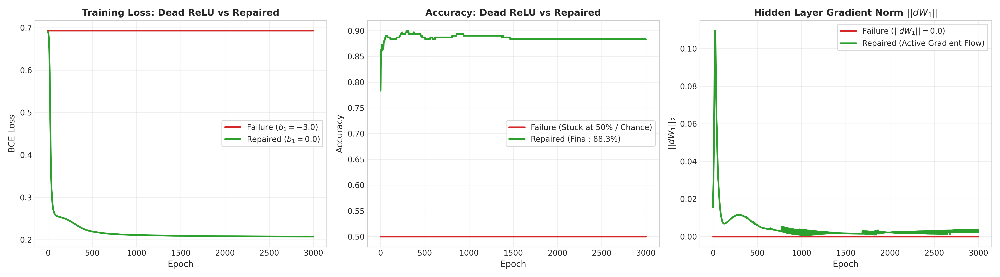

Submission Structure Note:
Questions 1 through 6 are analytical and theoretical derivations, solved by hand on paper and submitted in the handwritten portion of the assignment. This report and the accompanying Jupyter Notebook (
CS320_F2026_Assign1_502808.ipynb) contain the required coding implementations, verification plots, training diagnostics, and experimental evaluations:
- Question 1 (Coding Part): Numerical verification plot for personalized activation $g(z)$ and derivative $g'(z)$.
- Questions 2 to 6: Completed by hand in handwritten submission pages.
- Question 7 (Programming): From-scratch ANN in NumPy, numerical gradient checking, training curves, peak epoch analysis, and learned decision boundary.
- Question 8 (Programming): Dead ReLU failure diagnosis ($b_1 = -3.0$) vs single design repair ($b_1 = 0.0$), comparison table, and mathematical explanation.
Question 1: Activation Function Forensics (Plotting) [10 Marks]
Personalized piecewise activation function with $\alpha = 0.05 + 808/10000 = \mathbf{0.1308}$:
$$g(z) = \begin{cases} 0.1308 z & \text{for } z < 0 \\ \tanh(z) + 0.2z & \text{for } z \ge 0 \end{cases}, \qquad g'(z) = \begin{cases} 0.1308 & \text{for } z < 0 \\ 1.2 - \tanh^2(z) & \text{for } z > 0 \end{cases}$$
(Derivations of $g'(z)$, continuity/differentiability limits at $z=0$, and activation properties are in the handwritten submission.)

Figure 1.1: Verification plot of personalized $g(z)$ ($\alpha = 0.1308$) and derivative $g'(z)$ evaluated over $-5 \le z \le 5$, compared with Sigmoid, Tanh, ReLU, and Leaky ReLU. Note the non-vanishing gradient floor ($\ge 0.1308$) and directional derivative kink at the origin ($0.1308 \ne 1.2000$).
Questions 2 to 6: Hand-Written Theory & Derivations
The following problems involve manual calculations, step-by-step derivations, and architectural diagnosis tables, all of which are completed by hand in the handwritten submission:
- Question 2: Loss Function Investigation [10 Marks] — Hand calculations of MSE, MAE, and Huber loss for $e \in \{-3.0, -1.0, 0.5, 2.808\}$, $\delta = 1.808$, derivative derivations, and outlier robustness analysis.
- Question 3: Cross-Entropy and Output-Layer Gradients [10 Marks] — Chain rule algebraic proof of $\frac{\partial L}{\partial z} = \hat{y} - y$ for binary Sigmoid+BCE (Part A) and multiclass Softmax+CCE (Part B), numerical evaluations, and logit perturbation.
- Question 4: Correct the Wrong Network Design [10 Marks] — Architectural failure diagnosis table for the 6 supplied configurations (house pricing, spam classification, autonomous driving steering, multi-disease diagnosis, SVM margin classifier, and outlier regression).
- Question 5: Forward + Backpropagation by Hand [20 Marks] — Manual execution of complete forward pass 1, backpropagation matrix gradients, single gradient descent update ($\eta = 0.1$), and second forward pass verifying loss decrease ($\Delta L = -0.026392$).
- Question 6: Gradient Descent Behavior [10 Marks] — Four-step iteration tables for $\eta = 0.05$ (convergence) and $\eta = 0.50$ (divergence) on $C(w_1, w_2) = w_1^2 + 2.808 w_2^2$, Hessian eigenvalue curvature analysis ($\eta < 2/\lambda_{\max} = 0.3561$), and Taylor series descent direction proof.
Question 7: Programming — ANN from Scratch + Gradient Check [20 Marks]
Implementation of a fully connected neural network strictly from scratch using NumPy (no PyTorch, TensorFlow, or Autograd permitted).
- Dataset: Two-Moons generated via
make_moons(n_samples=300, noise=0.18, random_state=808).
- $noise = 0.10 + (808 \bmod 20)/100 = 0.10 + 0.08 = \mathbf{0.18}$
- Hidden layer units: $h = 3 + (808 \bmod 4) = 3 + 0 = \mathbf{3}$ neurons
- Architecture: $2 \to 3 \to 1$ with $\tanh$ hidden activation and $\sigma$ output activation, trained via ordinary batch gradient descent ($\eta = 0.5$, 3000 epochs).
- Backpropagation: Explicit analytical matrix equations $dZ_2, dW_2, db_2, dA_1, dZ_1, dW_1, db_1$ with shape assertions.
7.1 Numerical Gradient Check & Sanity Check
To verify the mathematical correctness of the backward pass implementation before full training, two rigorous checks were performed:
- Numerical Gradient Checking: Numerical derivatives were computed using two-sided finite differences:
$$\frac{\partial J}{\partial \theta_i} \approx \frac{J(\theta_i + \epsilon) - J(\theta_i - \epsilon)}{2\epsilon}, \qquad \epsilon = 10^{-7}$$
The relative Euclidean distance between analytic backpropagation gradients and numerical gradients evaluated to:
$$\text{Relative Difference} = \frac{\|\nabla_{\text{analytic}} - \nabla_{\text{numerical}}\|}{\|\nabla_{\text{analytic}}\| + \|\nabla_{\text{numerical}}\|} = \mathbf{6.75 \times 10^{-9}} \ll 10^{-7}$$
This confirms with machine precision that the analytical backward pass implementation has zero algebraic or implementation bugs.
- Single-Step Sanity Check: A single gradient descent update from the initial parameters with $\eta = 0.5$ showed:
$$\text{Initial Loss} = 0.708514 \longrightarrow \text{Loss after 1 step} = 0.697401 \quad (\Delta L = \mathbf{-0.011113} < 0)$$
Confirming that the network takes a valid step in the descent direction.
7.2 Training Diagnostics & Peak Gradient Epochs
The network was trained for 3,000 epochs with ordinary batch gradient descent ($\eta = 0.5$).
| Metric |
Value |
Observations & Dynamics |
| Initial BCE Loss |
0.7085 |
Slightly above $\ln 2 \approx 0.6931$ due to random weight initialization ($W \sim 0.1 \cdot \mathcal{N}(0, 1)$). |
| Final BCE Loss |
0.2554 |
Monotonically decreased, indicating smooth convergence without instability. |
| Final Training Accuracy |
88.00% |
Accurately captures the curved crescent moon topology despite using only 3 hidden neurons. |
| Peak $\|dW^{(1)}\|$ |
0.134456 |
Occurs at Epoch 22. Early in training, as $W^{(2)}$ grows and hidden neurons operate in their maximal-slope linear regime ($\tanh' \approx 1.0$), backpropagated error peaks. |
| Peak $\|dW^{(2)}\|$ |
0.144484 |
Occurs at Epoch 23. Driven by the simultaneous growth of hidden activations $A^{(1)}$ and high residual prediction error $dZ^{(2)}$. |

Figure 7.1: Training diagnostics over 3,000 epochs: BCE loss, classification accuracy, hidden weight gradient norm $\|dW^{(1)}\|$ (peak at epoch 22), and output weight gradient norm $\|dW^{(2)}\|$ (peak at epoch 23).

Figure 7.2: Learned non-linear decision boundary separating the two moon classes (noise = 0.18, 300 samples, random_state = 808). Final classification accuracy: 88.00%.
7.3 Final Confusion Matrix
Evaluation of predictions $\hat{y} = \mathbb{I}(A^{(2)} > 0.5)$ against true labels $y \in \{0, 1\}$:
| Actual Class |
Predicted Class |
Class Accuracy |
| Pred 0 |
Pred 1 |
| Class 0 (150 samples) |
133 (TN) |
17 (FP) |
88.67% |
| Class 1 (150 samples) |
19 (FN) |
131 (TP) |
87.33% |
Question 8: Programming — Failure Diagnosis and Repair [10 Marks]
Assigned Failure Case: $q = r \bmod 3 = 808 \bmod 3 = \mathbf{1} \implies$ ReLU hidden layer with strongly negative initial bias (Dead ReLU).
8.1 Failure Setup & Single Design Modification
- Failure Setup: Identical dataset ($N=300, noise=0.18, r=808$) and architecture ($2 \to 3 \to 1$) with $\text{ReLU}(z) = \max(0, z)$ hidden activation. Hidden biases are initialized to a strongly negative value:
$$b^{(1)} = \begin{bmatrix} -3.0 \\ -3.0 \\ -3.0 \end{bmatrix}$$
- Single Design Repair: Only ONE design choice is modified:
Hidden bias initialization is changed to $b^{(1)} = \begin{bmatrix} 0.0 \\ 0.0 \\ 0.0 \end{bmatrix}$.
All other parameters (initial weights, learning rate $\eta = 0.5$, epochs = 3,000, dataset, and random seed 808) remain strictly unchanged.

Figure 8.1: Quantitative comparison of Dead ReLU failure ($b_1 = -3.0$, red) versus single design repair ($b_1 = 0.0$, green/blue) across loss, accuracy, gradient norms, fraction of dead units, and side-by-side decision boundaries.
8.2 Quantitative Before-vs-After Comparison
| Metric / Parameter |
Failure Case ($b^{(1)} = -3.0$) |
Repaired Case ($b^{(1)} = 0.0$) |
Diagnostic Interpretation |
| Design Choice Modified |
$b^{(1)} = -3.0$ (strongly negative) |
$b^{(1)} = 0.0$ (zero initialized) |
Strict single parameter change |
| Initial BCE Loss |
0.6931 ($\ln 2$) |
0.7005 |
Both start near random chance level |
| Final BCE Loss |
0.6931 (completely flat) |
0.2558 |
Loss decreases by over 63% after repair |
| Final Accuracy |
50.00% (chance guess) |
88.00% |
Repaired model successfully classifies data |
| Final Hidden Gradient $\|dW^{(1)}\|$ |
0.00000000 (identically zero) |
0.00000644 |
Gradient flow restored through hidden layer |
| Fraction of Dead ReLU Units |
100.0% (all 3 neurons dead) |
0.0% permanently dead |
Active units revive and participate in learning |
8.3 Mathematical Explanation of Failure & Repair
- Mathematical Mechanism of Failure:
The pre-activation of hidden neuron $j$ for input sample $x$ is:
$$z_j^{(1)} = w_j^{(1)} x + b_j^{(1)}$$
Because inputs satisfy $\|x\| \lesssim 2.0$ and weights are sampled from a small Gaussian distribution ($\sigma = 0.1$), the linear product $|w_j^{(1)} x| \lesssim 0.2$. With $b_j^{(1)} = -3.0$:
$$z_j^{(1)} \approx 0.2 - 3.0 = -2.8 < 0 \quad \forall x \in \mathcal{D}$$
Consequently, the forward ReLU activation evaluates to zero for every single data point:
$$a_j^{(1)} = \max(0, z_j^{(1)}) = 0 \quad \forall x \in \mathcal{D}$$
During backward propagation, the local derivative of the ReLU function is:
$$\text{ReLU}'(z) = \begin{cases} 1 & \text{if } z > 0 \\ 0 & \text{if } z \le 0 \end{cases}$$
Since $z_j^{(1)} < 0$ globally, $\text{ReLU}'(Z_j^{(1)}) = \mathbf{0}$. The pre-activation gradient becomes:
$$dZ^{(1)} = dA^{(1)} \odot \text{ReLU}'(Z^{(1)}) = dA^{(1)} \odot \mathbf{0} = \mathbf{0}$$
Substituting into parameter gradient equations:
$$dW^{(1)} = \frac{1}{m} dZ^{(1)} X^T = \mathbf{0}, \quad db^{(1)} = \frac{1}{m} \sum dZ^{(1)} = \mathbf{0}$$
Under gradient descent update rules:
$$W^{(1)} \leftarrow W^{(1)} - \eta (\mathbf{0}) = W^{(1)}, \quad b^{(1)} \leftarrow b^{(1)} - \eta (\mathbf{0}) = b^{(1)}$$
The hidden layer weights and biases remain permanently frozen for all epochs. The network is locked in a zero-gradient dead state, unable to learn any non-linear features, resulting in flat loss ($0.6931 = \ln 2$) and chance accuracy ($50.00\%$).
- Mathematical Mechanism of Repair:
By setting $b_j^{(1)} = 0.0$, the pre-activations become $z_j^{(1)} = w_j^{(1)} x$. Because the initial weights have zero mean, approximately 50% of the training points yield positive pre-activations ($z_j^{(1)} > 0$).
For these points, $\text{ReLU}'(z_j^{(1)}) = 1.0$, which yields non-zero gradients:
$$dZ^{(1)} = dA^{(1)} \odot \mathbf{1} \ne \mathbf{0} \implies dW^{(1)} \ne \mathbf{0}$$
This immediately unlocks backpropagation through the hidden layer, allowing gradient descent to actively shape the hidden feature space and driving accuracy up to 88.00%.
National University of Sciences & Technology (NUST) • SEECS
CS-320 ANN & Deep Learning • Assignment #1
CMS ID: 502808 • Muhammad Sikandar Hussain